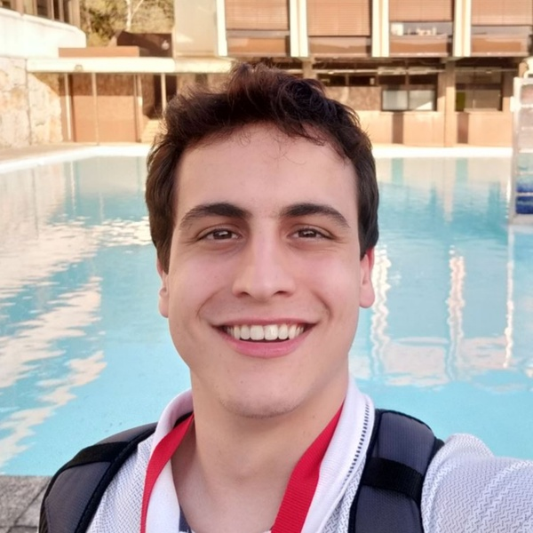

Carlos Eduardo Marciano
Estudante de Engenharia de Computação e Informação
Universidade Federal do Rio de Janeiro – UFRJ
Rio de Janeiro, RJ, Brasil
cemarciano@poli.ufrj.br

Minha História
Sou um estudante de 22 anos que teve seu primeiro contato com programação aos 14 desenvolvendo RPGs no Adobe Flash (na já extinta linguagem ActionScript 2.0).
Junto com dois amigos artistas que conheci em fórums, um de Nova York e outro de Toronto, criamos mundos que serviriam de base pra alimentar o sonho de seguir
uma carreira na área de computação.
Entrei na faculdade em 2015 e, por acaso, puxei uma matéria de algoritmos e estruturas de dados que só deveria ser puxada 2 semestres depois.
Curiosamente, foi naquela disciplina até então misteriosa que eu encontraria meu maior interesse na computação. Passei com nota máxima e me tornei monitor da matéria,
cargo que ocuparia pelos próximos 2 anos.
Foi em algoritmos que pude ajudar o maior número de pessoas e aprender diversas lições. Apesar de ter sido oferecido um terceiro ano, deixei o cargo no final de 2017 pra me dedicar à pesquisa. Junto com o professor
Vinícius Gusmão, tenho desenvolvido um algoritmo pra encontrar "strong double tracings" em grafos, um tema pouco explorado com diversas aplicações urbanas.